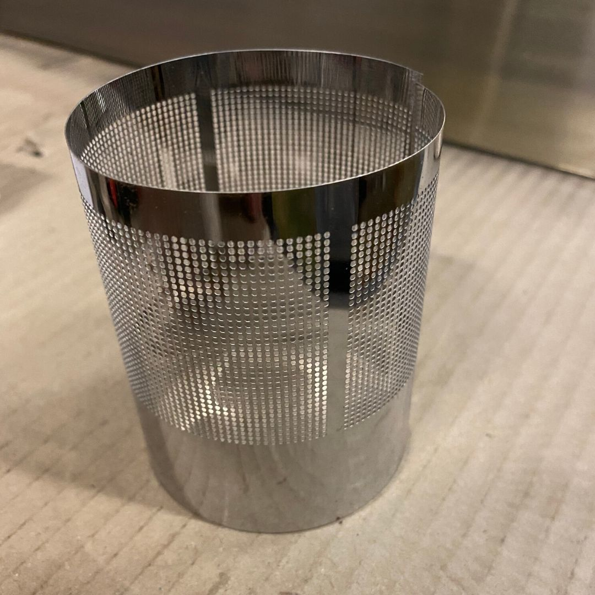
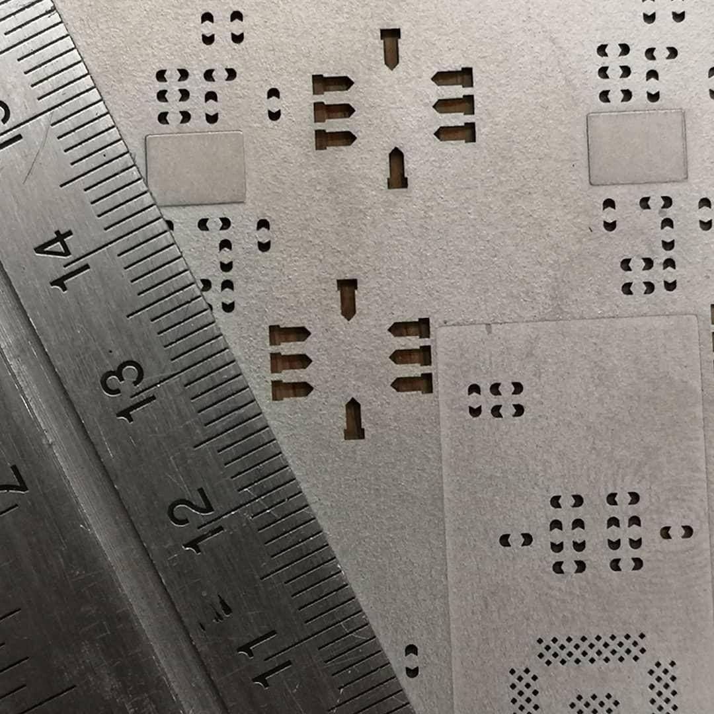
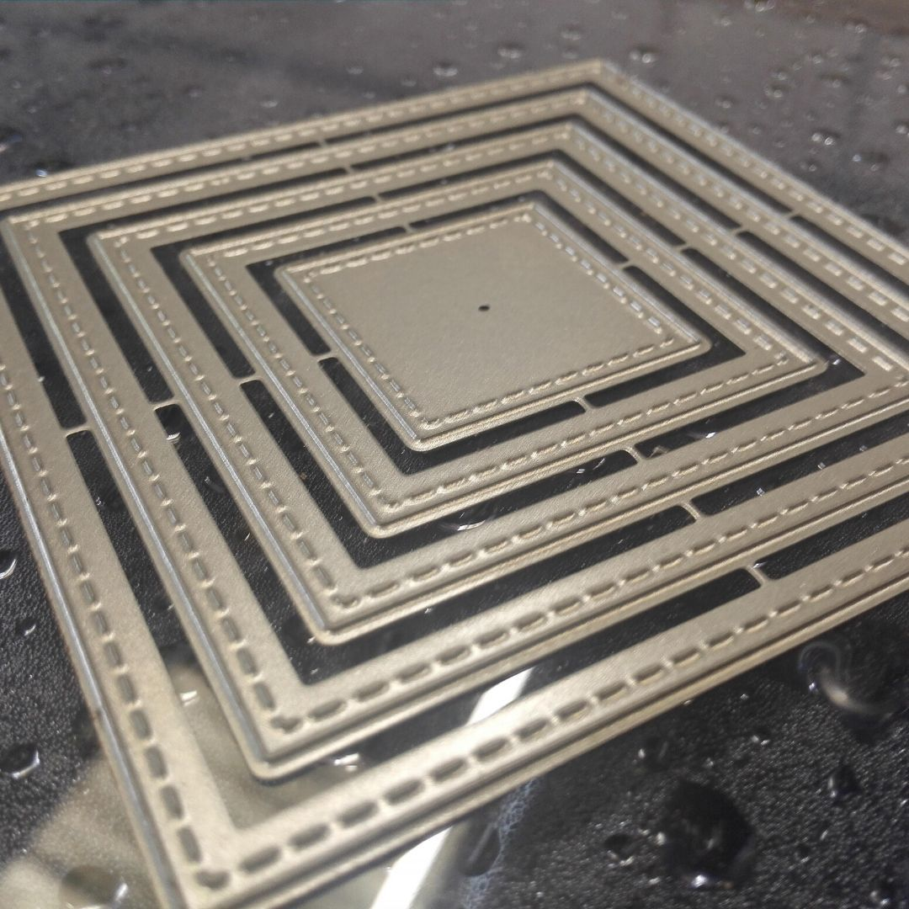
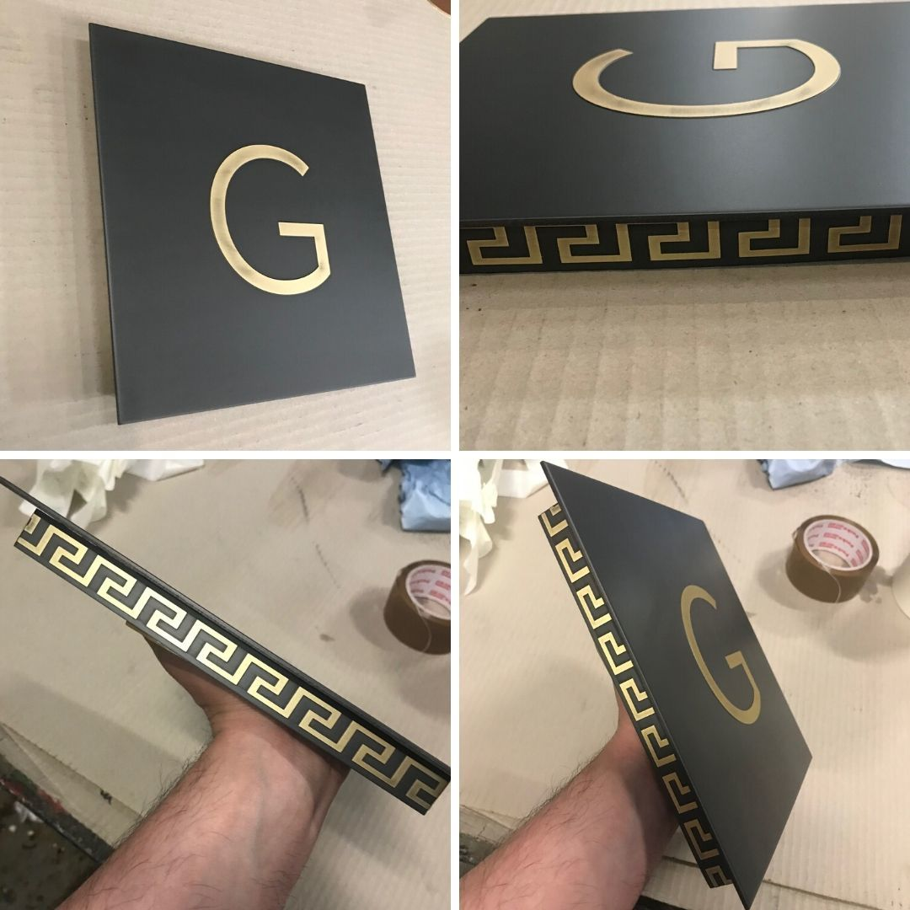
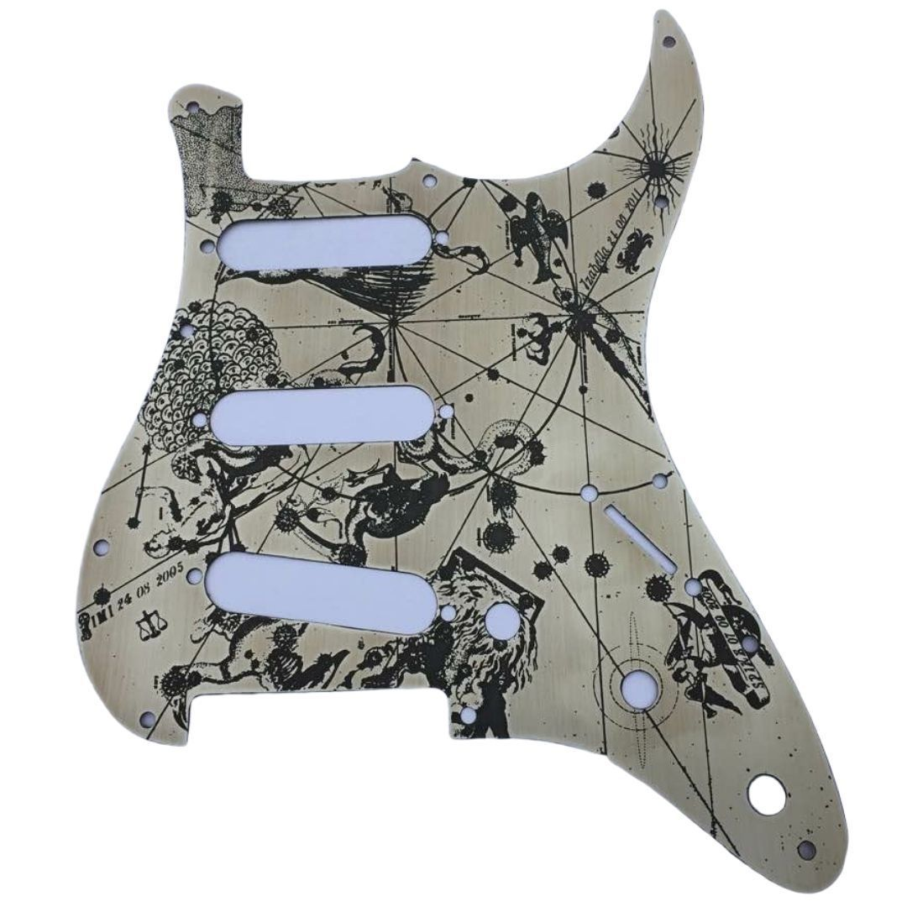

✈️ Luft- und Raumfahrt
Strukturbauteile, Filterelemente und Mikrobauteile für die Luftfahrtindustrie – wo Präzision und Gewichtsreduzierung entscheidend sind.
Komplexe Metallstrukturen gratfrei und präzise – ganz ohne mechanische Belastung oder Wärmeeinwirkung.
Beim chemischen Fräsen (Chemical Milling) werden Metallteile durch selektives Ätzen in chemischen Bädern geformt. Im Gegensatz zu mechanischen Bearbeitungsverfahren gibt es keinen Kontakt zwischen Werkzeug und Werkstück.
Dadurch werden keine geometrischen Einschränkungen durch Werkzeuggröße oder Steifigkeit des Fräsers verursacht – selbst komplexeste Innen- und Außenkonturen können realisiert werden.
Das Verfahren eignet sich besonders für dünnwandige Bauteile, bei denen jede mechanische Beanspruchung zu Verformungen führen würde, sowie für Serienfertigungen, bei denen gleichbleibende Maßhaltigkeit entscheidend ist.

Das Material wird Atom für Atom aufgelöst – ohne jede mechanische Beanspruchung, was zu perfekt glatten, gratfreien Oberflächen führt.
Ohne Wärmeverformung bleibt die ursprüngliche Materialstruktur vollständig erhalten – ideal für dünnwandige Teile.
Keine Werkzeugbeschränkungen ermöglichen filigrane Innen- und Außenkonturen, die mit konventionellen Methoden nicht realisierbar wären.
Toleranzen bis ±0,05 mm sind prozessbedingt erreichbar – auch über große Flächen und bei hohen Stückzahlen.
Strukturbauteile, Filterelemente und Mikrobauteile für die Luftfahrtindustrie – wo Präzision und Gewichtsreduzierung entscheidend sind.
SMT-Stencils, Leiterplattenstrukturen und elektronische Komponenten mit feinsten Leiterbahnen und Konturen.
Zahnräder, Federn, Mikromechanische Bauteile und kundenspezifische Komponenten für den allgemeinen Maschinenbau.
Chirurgische Instrumente und medizinische Gerätebauteile mit höchsten Anforderungen an Oberflächengüte und Maßhaltigkeit.
Dünnwandige architektonische Elemente, Geländerfüllungen und dekorative Metallstrukturen mit komplexen Formen.
Komplexe metallische Designobjekte und filigrane Strukturen für High-End-Anwendungen.




Teilen Sie uns Ihre Anforderungen mit – wir prüfen, ob chemisches Fräsen die optimale Lösung für Ihr Projekt ist.